6 days trip to Japan.
26th of April - Thursday [Departure]
tokyo
Departure
Morning
Singapore to Kuala Lumpur
Air Asia Flight 704
Depart 10.30 am
Arrive 11.30 am
Afternoon
Kuala Lumpur to Tokyo
Air Asia Flight 522
Depart 2.40 pm
Arrive 10.30 pm
Evening

Sleep
On The Marks Tokyo Kawasaki, Kawasaki
17-1 Ogawamachi, Kawasaki-ku, Kawasaki, Kanagawa-ken, 210-0023 Japan
27th of April - Friday
tokyo
Theme - Modern Tokyo
Morning
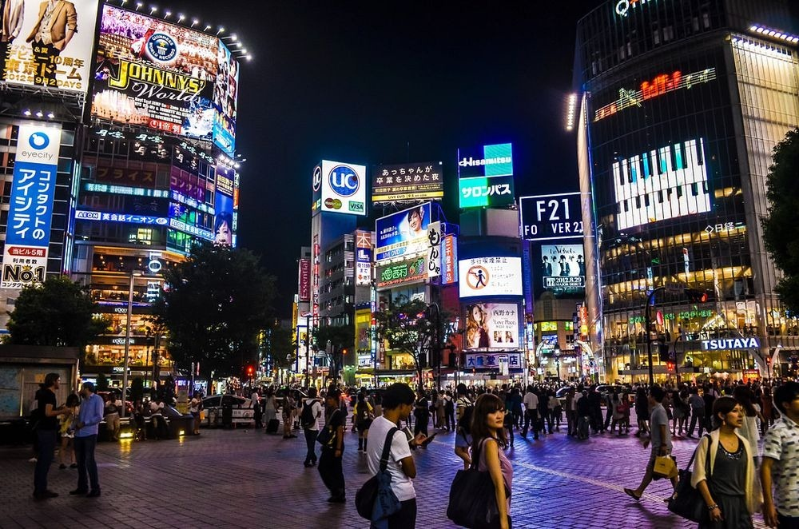
Check in at Nakano-ku, Shinjuku
On The Marks Tokyo Kawasaki, Kawasaki
17-1 Ogawamachi, Kawasaki-ku, Kawasaki, Kanagawa-ken, 210-0023 Japan
Afternoon
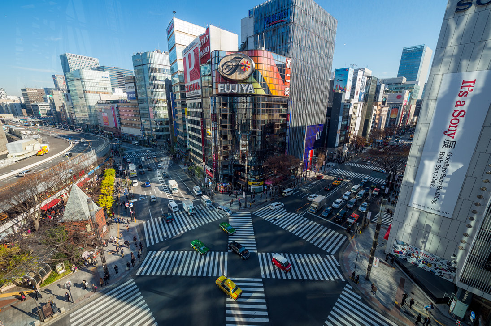
Ginza
Description
famous for 12 storey Uniqlo
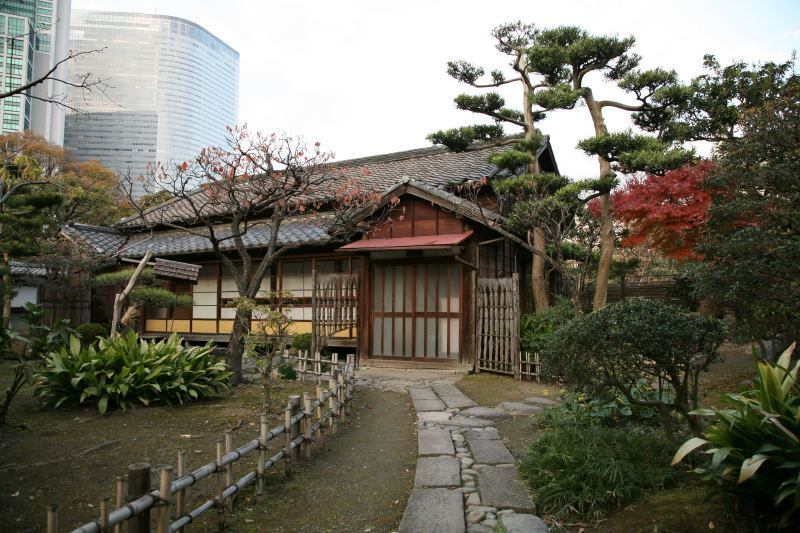
Hamarikyu Garden
Description
famous for 12 storey Uniqlo
Evening
Shibuya
Description
Shibuya (渋谷) is one of the twenty-three city wards of Tokyo, but often refers to just the popular shopping and entertainment area found around Shibuya Station. In this regard, Shibuya is one of Tokyo's most colorful and busy districts, packed with shopping, dining and nightclubs serving swarms of visitors that come to the district everyday.
28th of April - Saturday
tokyo
Theme - Culture & Heritage
Morning
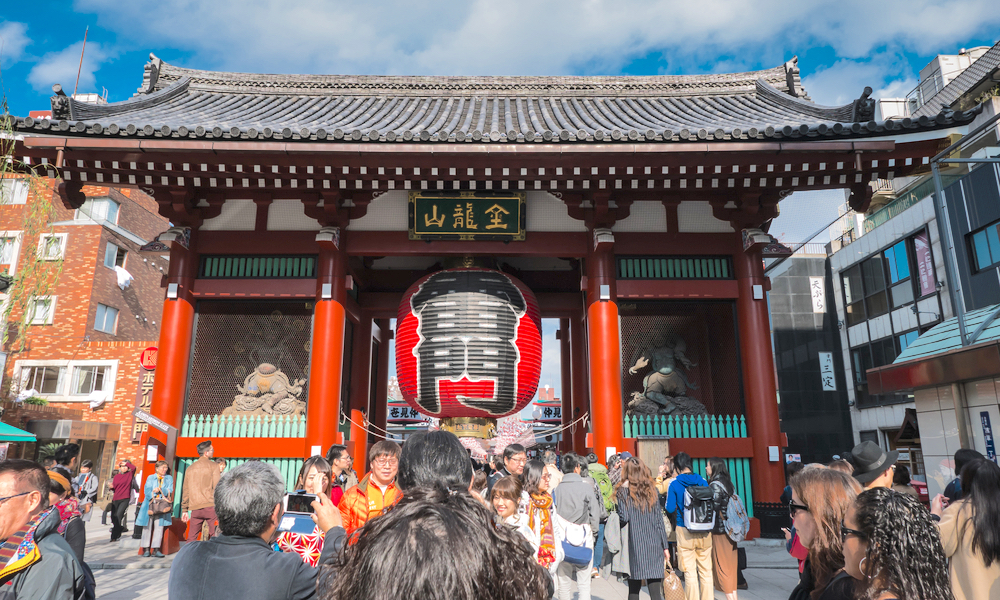
Sensoji Temple
Description
Sensō-ji is an ancient Buddhist temple located in Asakusa, Tokyo, Japan. It is Tokyo's oldest temple.
Afternoon
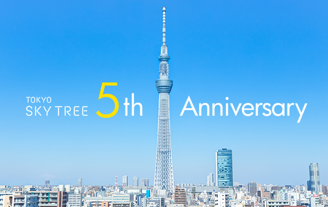
Tokyo SkyTree
Description
Tokyo Skytree is a broadcasting, restaurant, and observation tower in Sumida, Tokyo, Japan

Ueno Park
Description
Ueno Park is a spacious public park in the Ueno district of Taitō
Evening
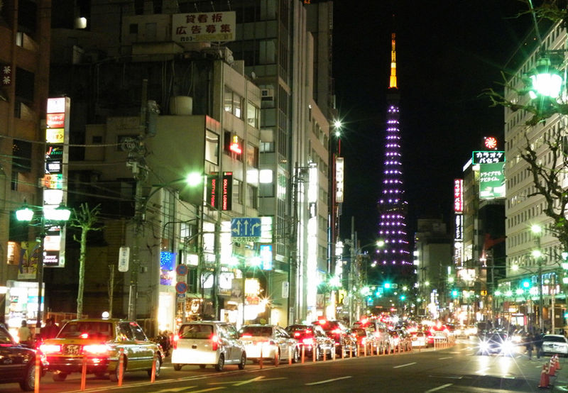
Roppongi
Description
Roppongi (六本木, literally "six trees") is a district of Minato, Tokyo, Japan, famous for the affluent Roppongi Hills development area and popular night club scene. Many foreign embassies are located in Roppongi, and the night life is popular with locals and foreigners alike.
29th of April - Sunday
tokyo
Theme - Shrines
Morning
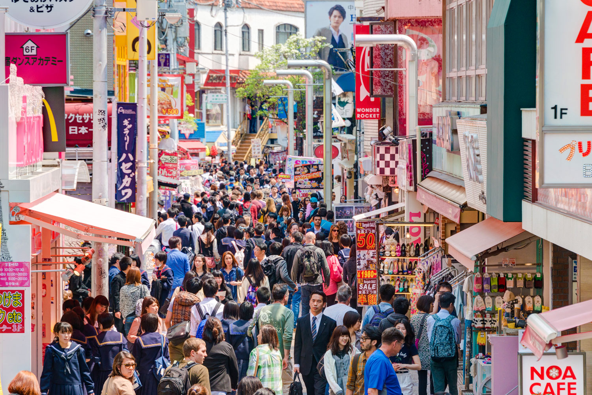
Harajuku
Description
Harajuku is renowned for its colorful street art and fashion scene, with quirky vintage clothing stores
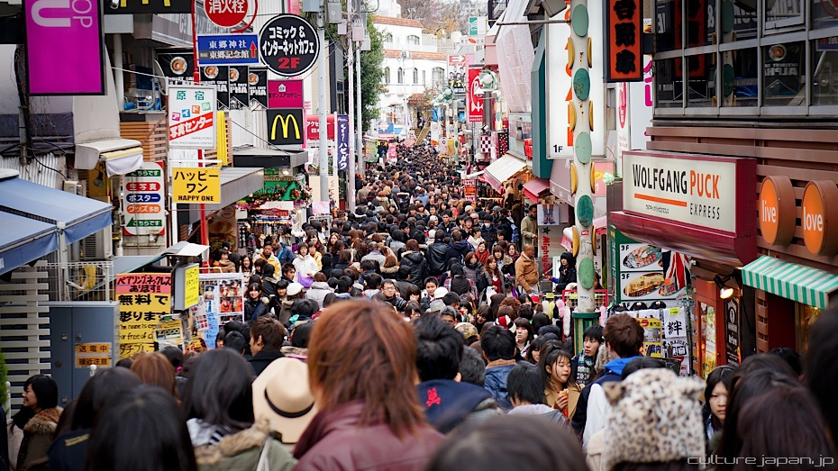
Takeshita Dori
Description
Takeshita Dori [竹下通り] - a pedestrianized street (between the hours of 11am and 6pm) in Harajuku Tokyo that is filled with restaurants, cafes, fashion and accessory stores and a lot of people. Most of the stores are aimed at the younger generation so you will see a load of students after school hours too.
Afternoon
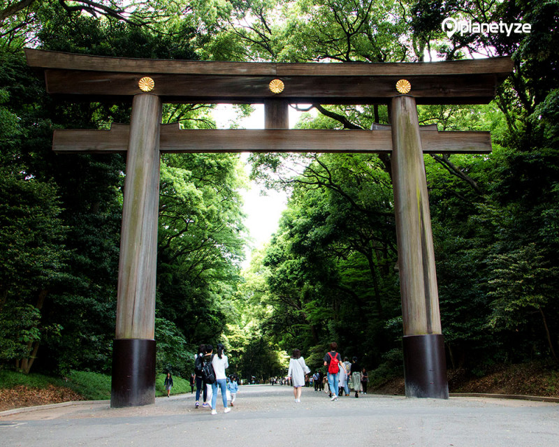
Meiji Shrine
Description
Meiji Shrine (明治神宮, Meiji Jingū) is a shrine dedicated to the deified spirits of Emperor Meiji and his consort, Empress Shoken. Located just beside the JR Yamanote Line's busy Harajuku Station, Meiji Shrine and the adjacent Yoyogi Park make up a large forested area within the densely built-up city
Evening
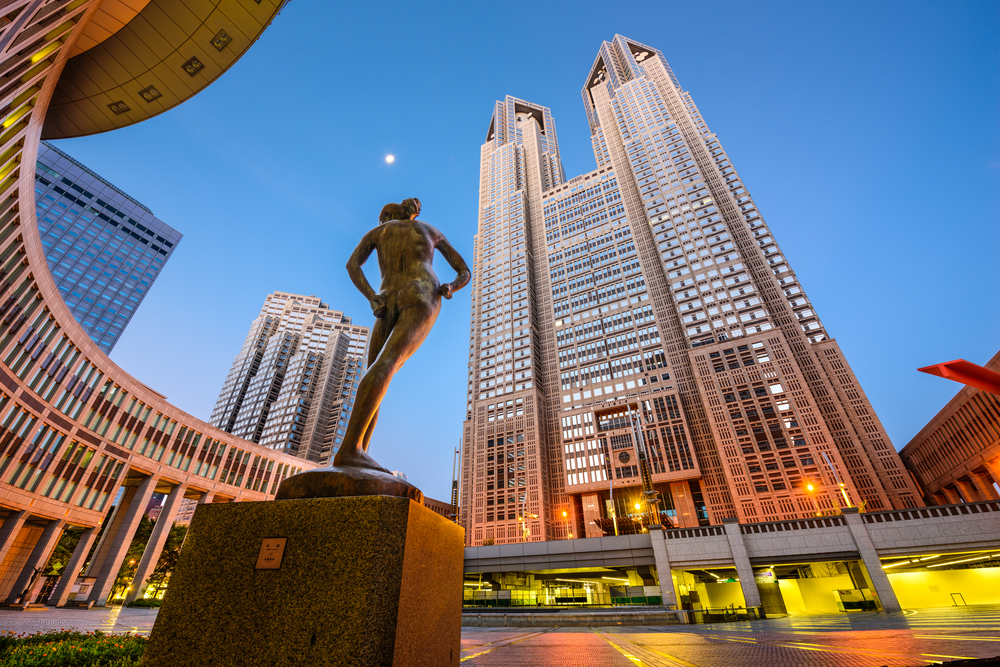
Tokyo Metropolitan Building
Description
Great panoramic view of Tokyo from the observatories
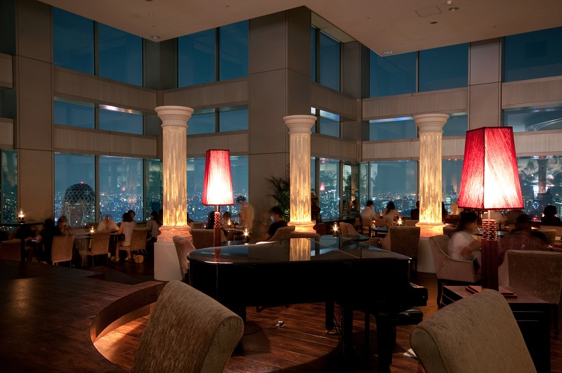
Good View Tokyo
Description
At North Observatory deck, there is an elegant restaurant called “Good View Tokyo”, they serve breakfast, lunch, tea and dinner. Enjoy a dynamic panoramic view of Tokyo while enjoying a meal.
30th of April - Monday [Travel to Osaka]
tokyo
Theme - Disney Sea
Whole Day
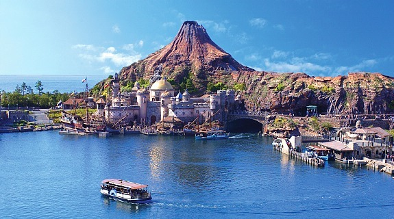
Disney Sea
Description
Tokyo DisneySea is a fantasy theme park in Tokyo Disney Resort that is unique to Japan. Inspired by the myths and legends of the sea, Tokyo DisneySea is made up of seven themed ports of call: Mediterranean Harbor, Mysterious Island, Mermaid Lagoon, Arabian Coast, Lost River Delta, Port Discovery and American Waterfront.
Evening
Kuala Lumpur to Tokyo
Will Express
Depart 9.50 pm
Arrive next day morning
1st of May - Tuesday
osaka
Theme - Osaka Heritage
Morning
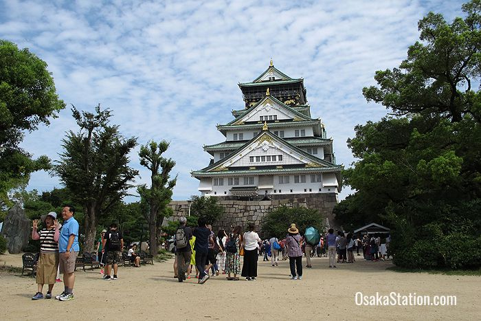
Osaka Castle
Description
The castle stands in an expansive lawn covered park and consists of a complex network of moats, turrets, and walls surrounding a massive central tower. Thirteen of the structures around the main tower are designated as Important Cultural Assets by the national government. The main central tower is 55 meters high and houses a museum and a viewing platform from which visitors can enjoy fantastic panoramic views of Osaka city.
Afternoon
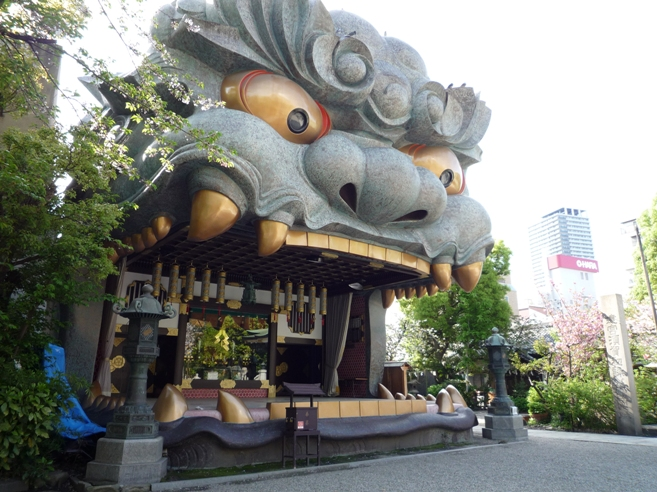
Namba Yasaka Shrine
Description
Tokyo Skytree is a broadcasting, restaurant, and observation tower in Sumida, Tokyo, Japan
Evening

Umeda Sky Building
Description
The Sky Building is a familiar sight on the Umeda skyline and also a popular recreation spot with gardens, restaurants, a cinema, and of course the observation deck from which you can enjoy sweeping views over the city.
2nd of May - Wednesday
osaka
Theme - Kyoto
Morning
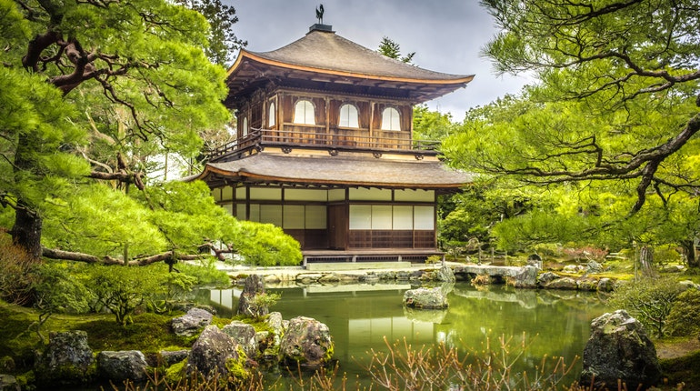
Ginkakuji (Philosopher's path)
Description
Home to a sumptuous garden and elegant structures, Ginkaku-ji is one of Kyoto's premier sites. The temple started its life in 1482 as a retirement villa for Shogun Ashikaga Yoshimasa, who desired a place to retreat from the turmoil of a civil war.
Price
500 yen/adult
Afternoon
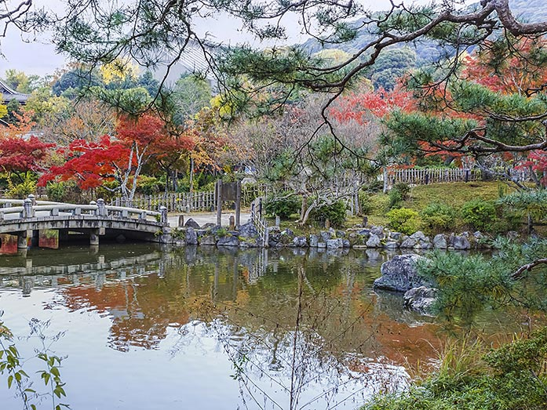
Maruyama Park
Description
Maruyama Park is the oldest public park and a nationally-designated Place of Scenic Beauty in Kyoto near the Yasaka Shrine in the Higashiyama district. It covers an area of 86000 square meters and is home to appr. 680 cherry trees.
Evening
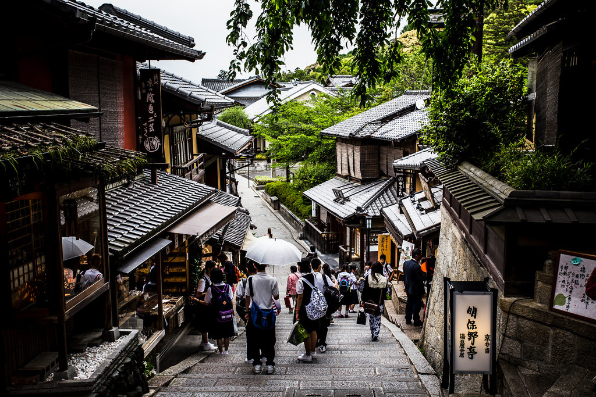
Sannen Zaka
Description
Lined with beautifully restored traditional shophouses and blissfully free of the overhead power lines that mar the rest of Kyoto, Sannen-zaka and Ninen-zaka are a pair of pedestrian-only lanes that make for some of the most atmospheric strolling in the whole city.
3rd of May - Thursday
osaka
Theme - Raaaamen
Morning
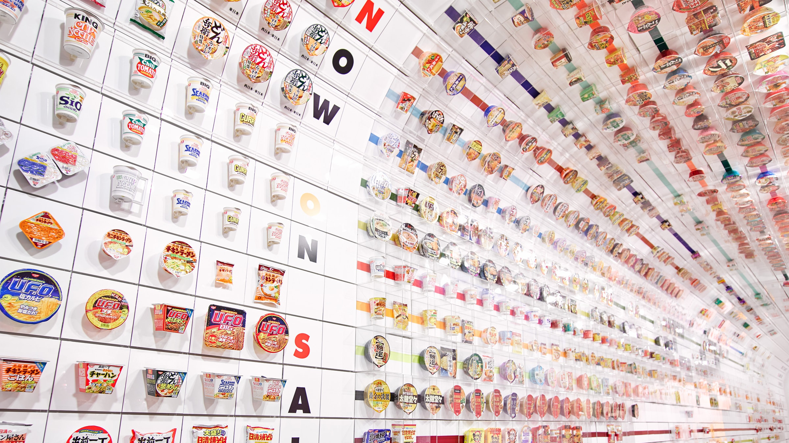
Momofuku Ando Instant Ramen Museum
Description
Sensō-ji is an ancient Buddhist temple located in Asakusa, Tokyo, Japan. It is Tokyo's oldest temple.
Evening
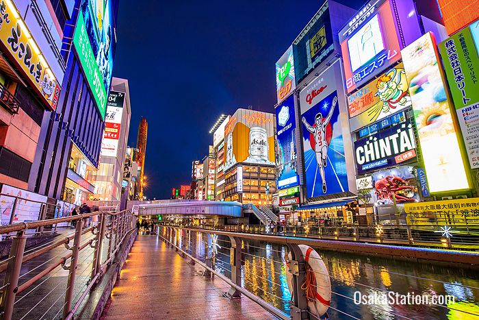
Dotonbori
Description
The lively entertainment area of Dotonbori is Osaka’s most famous tourist destination and renowned for its gaudy neon lights, extravagant signage, and the enormous variety of restaurants and bars.
4th of May - Friday
osaka
Theme - Culture & Heritage
Morning
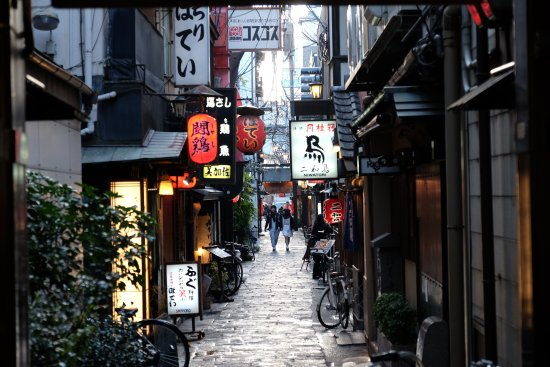
Hozenji Yokocho
Description
intimate Osaka of the 19th century, small food shops and historic souvenir purveyors lie under paper lanterns on each side of the narrow, stone-paved lane.
Evening
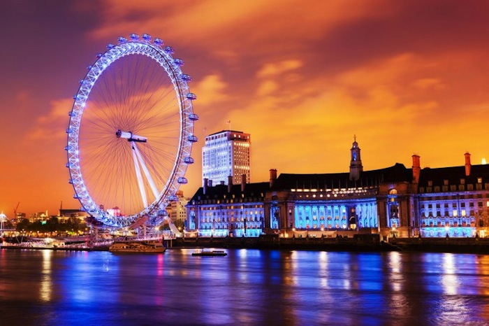
Tempozan Ferris Wheel
Description
Tempozan Ferris Wheel soars 112.5 meters into the air and has a diameter of 100 meters, making it one of the world's largest Ferris wheels.
5th of May - Friday [Return]
osaka
Departure
Morning
Osaka to Kuala Lumpur
Air Asia Flight 533
Depart 11.00 am
Arrive 4.35 pm
Afternoon
Kuala Lumpur to Singapore
Air Asia Flight 721
Depart 7.40 pm
Arrive 8.50 pm